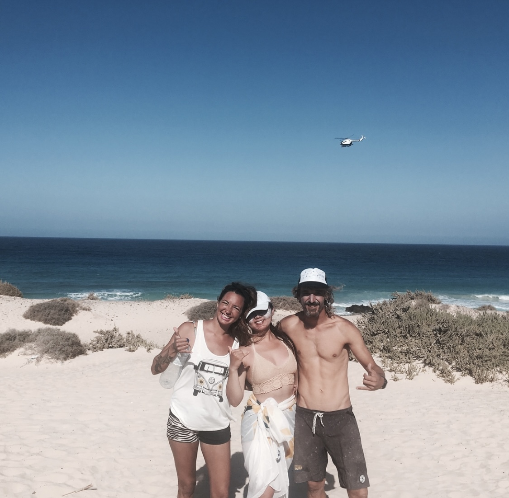
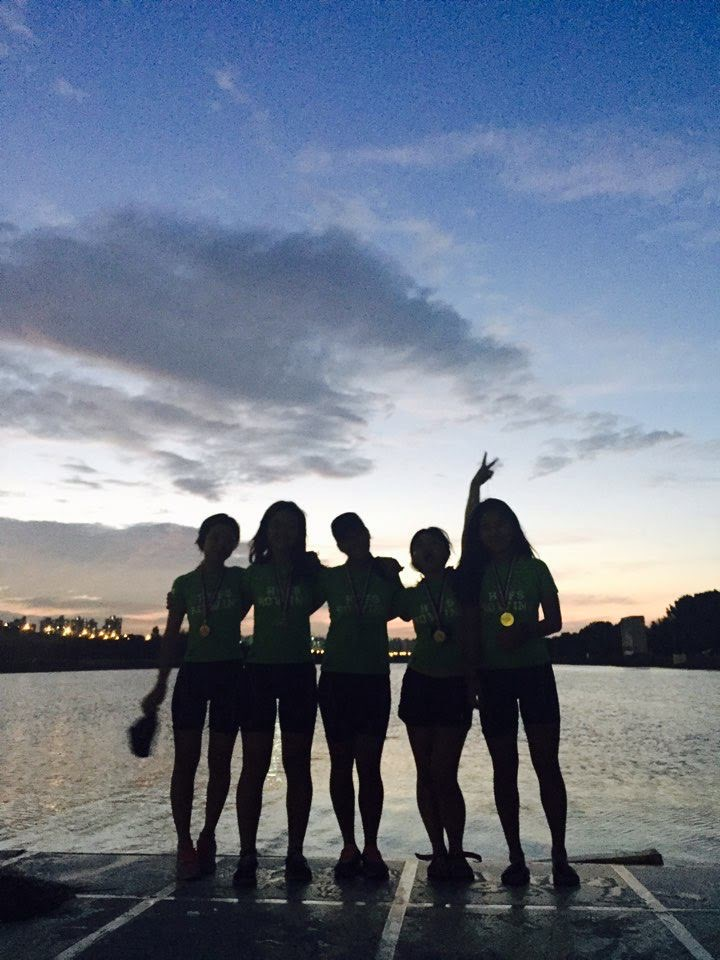
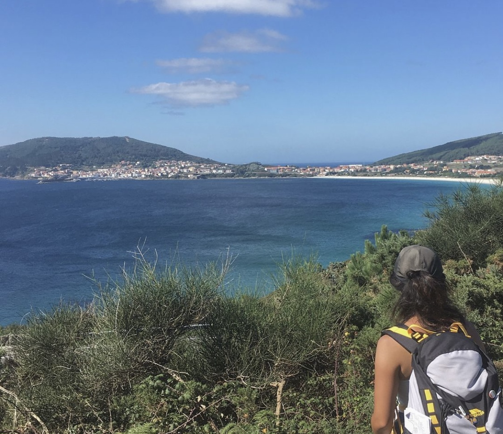

Ellie Park
working as a project manager for 4 years, now with language and communication skills along with problem-solving mindset,
ready to jump on Software Engineering
Work Experience
project management at Korean International Trade Association

Sports Instructor in France, Ireland and Spain
Education & Language
Studied Chinese Language and Literature and Frech mainly at Hankuk University of Foreign Studies
ICT courses: Computer Programming / Introduction to Computer Logic / Engineering Design

Business courses:Mathematics for Social Science / Understanding of
21st Century Marketing / Field marketing trade practice /
Global Finance Environment /Principles of Economics /
Principles of Accounting /
Mathematics for Economics /
Statistics / Critical Reasoning / Trade Negotiation
Experinece

Rowing Team Leader: leading 25 members for preparing the competitions won 5 gold medals, and gain achievement, leadership, collaboration skills

Walking on the trail of Camino de Santiago : Walked about 1,000 km from France to Portugal improved perseverance, desire to challenge
Project
Info
elliepark1012@gmail.com